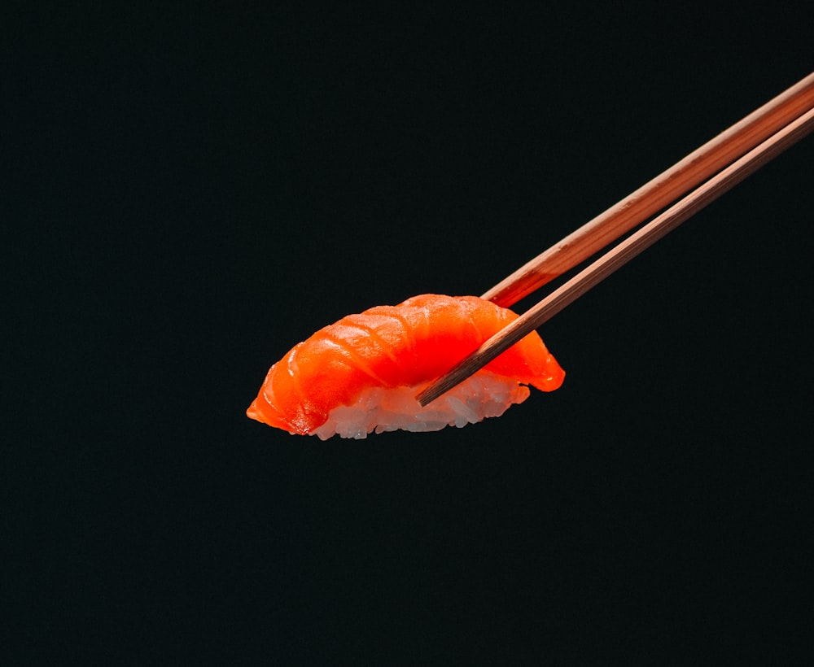
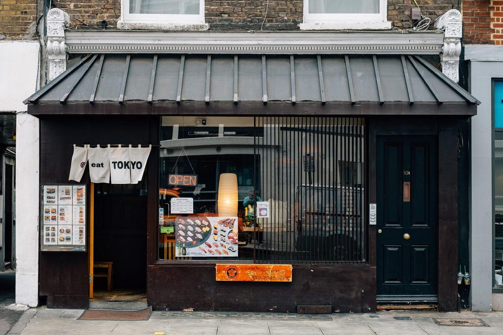
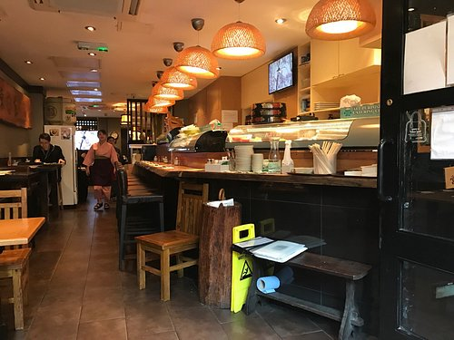

WELCOME TO EAT TOKYO
暖簾の向こうに、いつもの和食。
Your familiar
Japanese kitchen.
A warm light. A wooden counter.
A little taste of Japan, here in London.

ロンドンで、いただきます。
Find your neighbourhood kitchen
二 / BEHIND THE CURTAIN
木のぬくもり。
いつもの席。
Make yourself at home.
Cream curtains, dark timber and the glow of warm lights. These are the little things that make an Eat Tokyo kitchen feel familiar.
A quick lunch at the counter. A meal with friends. Step inside, take a seat and find something you love.

三
YOUR NEIGHBOURHOOD
店舗案内
Find your Eat Tokyo.
Menus, opening times and booking information are available on each official branch page.
また、お待ちしています。